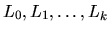
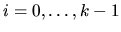
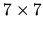
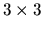

| The PATH |
``PATH" is a game played by two players on an N by N board, where N is a positive integer. (If N = 8, the board looks like a chess board.) Two players ``WHITE" and ``BLACK" compete in the game to build a path of pieces played on the board from the player's ``home" edge to the player's ``target" edge, opposite the home edge. WHITE uses white pieces and BLACK uses black pieces.
For this problem you will play the ``referee" for the game, analyzing boards
containing black and white pieces to determine whether either of the players has
won the game or if one of the players can win by placing one of their pieces in
an unfilled position. WHITE's turn is next.
A representation of a board on paper (and in a computer) is an N x N matrix of
characters 'W', 'B', and 'U'; where W represents white pieces, B represents
black pieces, and 'U' represents unfilled positions on the board.
When we view a matrix representation of the board on paper, WHITE's home
edge is the left edge of the board (the first column), and WHITE's target edge is
the right edge (the last column). BLACK's home edge is the top edge of the
board (the first row), and BLACK's target edge is the bottom edge (the last row).
Thus WHITE wants to build a path from left to right, and BLACK wants to build a
path from top to bottom.
Two locations on the board are ``adjacent" if one is immediately to the left, to the
right, above, or below the other. Thus an interior location on the board is
adjacent to four other locations. For N > 1, corner locations each have two
adjacent locations, and for N > 2, other border locations have three adjacent
locations.
A path is a sequence of distinct positions on the board,
,
such that each pair Li and Li+1 are adjacent for
.
A winning path for a player is a
path
filled with the player's pieces such that L0 is
a position on the
player's home edge and Lk is a position on the player's target edge. It is clear
that if one player has a winning path then the other player is blocked from having
a winning path. Thus if all the squares contain pieces, either there are no
winning paths or exactly one of the players has at least one winning path.
White has a winning path.
Black has a winning path.
White can win in one move. (White can place a piece in an unfilled position)
Black can win in one move. (White can't win in one move AND Black can if White does't move)
There is no winning path.
7 WBBUUUU WWBUWWW UWBBBWB BWBBWWB BWWBWBB UBWWWBU UWBBBWW 3 WBB WWU WBB 0
White has a winning path. White can win in one move.
Discussion:
For the  board, the shortest winning path for WHITE covers 15 locations. For the  board, WHITE appears to have a path from top to bottom, but remember, WHITE wants a path from left to right.